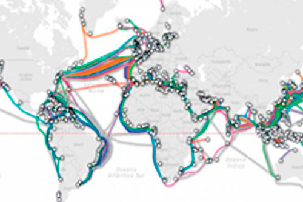

A históra da Internet
Esta postagem é apenas um resumo, o link da documentação oficial está => MDN

Conheça histórias das tecnologias que usamos no dia-dia , como surgiram , sua evolução e os impactam que causam em nossa sociedade…
A Internet veio da Guerra Fria
Depois da Segunda Guerra, EUA e URSS começaram a ter seus desentendimentos, dando origem à guerra fria em 1949. Neste contexto enorme, em que os dois bloco ideológicos e politicamente antagônicos exerciam enorme controle e influência no mundo, qualquer mecanismo, qualquer inovação, qualquer ferramenta nova poderia contribuir nessa disputa liderada pela União Soviética e pelos Estados Unidos: as duas superpotências compreendiam a eficácia e a necessidade absoluta dos meios de comunicação.
Nessa perspectiva, o governo dos Estados Unidos temia um ataque russo às bases militares. Então foi idealizado um modelo de troca e compartilhamento de informações que permitisse a descentralização das mesmas. Assim, se o Pentágono fosse atingido, as informações armazenadas ali não estariam perdidas. Era preciso, portanto, criar uma rede, a Arpanet, criada pela Darpa, sigla para Defence Advanced Research Projects Agency.
O objetivo desta instituição, era a implantação de uma rede de comunicações, entre os locais mais críticos do sistema de defesa Norte-Americano.
A rede de comunicações foi construída para sobreviver a ataques inimigos, caso uma parte fosse perdida a outra deveria funcionar normalmente.
Para que isso fosse possível os dados eram divididos em pacotes que seriam enviados, de forma instantânea, por várias rotas que estivessem disponíveis, sistema conhecido como chaveamento de pacotes
Já na década de 1970, a tensão entre URSS e EUA diminui. As duas potências entram definitivamente naquilo em que a história se encarregou de chamar de Coexistência Pacífica.Com isso misturam-se três mundos distintos: Militares, cientistas e universidades e redes comerciais. E o resultado foi o aparecimento de múltiplas aplicações assim como o uso da palavra internet(o termo internet surgiu 1973 como uma abreviação de interconnect Networking).
Internet e WWW
Em 1992 o cientista Tim Berners-Lee do CERN, na Suíça apresentou um novo sistema de informação baseado na internet. Esse novo sistema ficou conhecido como World Wide Web, assim como a linguagem de marcação HTML e o protocolo HTTP.
HTTP : Protocolo usado para transferência de páginas HTML na WWW.
WWW: É uma rede virtual, dentro da internet constituída pelos servidores de documentos HTML, e pelos computadores clientes que acessam os servidores, usando protocolo HTTP.
Internet Uma rede global, que liga milhares de redes e computadores.
Em 1993 em Genebra, um inglê chamado Timothy Berners-Lee ou Tim Berners-lee, foi responsável por uma tecnologia muito importante que a gente tem até hoje, ele pesquisou um meio de transformar o conteúdo em algo mais interativo através de ligações entre documentos, Surgiu então a linguagem HTML, que foi criada por ele e por sua equipe, o protocolo HTTP, que se juntou ao conjunto de protocolos TCP/IP que fazem parte da Internet e também fundou a World Wide Web, a www que a gente usa até hoje, então basicamente quando você abre o navegador e digita www alguma coisa, você está utilizando uma tecnologia que foi inventada em 1993 por Tim Berners-Lee e sua equipe que trabalha no CERN, que é uma Organização Européia para Pesquisa de Energia Nuclear.
Vint Cerf
TCP/IP
Referenciado como um dos fundadores da Internet, foi em 2005 vice-presidente e “Chief Internet-Evangelist” da Google. Na época de sua contratação, o executivo-chefe da empresa, Eric Schmidt, chegou a dizer que Vinton Cerf era uma das pessoas mais importantes da história ainda vivas.
Junto a Robert Kahn, é um dos criadores da Internet, tendo participado da criação dos protocolos TCP/IP, que são o alicerce da conexão à rede. Foi Kahn quem desenvolveu o TCP e Vinton Cerf iniciou o desenvolvimento do IP para transmissão de informações pela Internet, o que foi reconhecido com a publicação do artigo A Protocol for Packet Network Intercommunication.
O Mosaic
O Mosaic foi um navegador muito importante para a evolução da tecnologia porque ele foi o primeiro, uma adaptação de um interpretador de Gopher que era um protocolo anterior ao HTTP, ele (Mosaic) também funcionava com HTTP e também mostrava páginas web.
Inclusive Marc Andreessen foi muito importante em 1994, quando ele saiu da NCSA se juntou com o bilionário e fundador da Silicon Graphics, chamado Jim Clark, e juntos fundaram uma empresa chamada de Netscape. A empresa Netscape criou um navegador baseado no Mosaic e com toda a experiência que Andreessen tinha facilmente se tornou o navegador mais famoso da internet.
acesse o mapa da rede mundial da internet